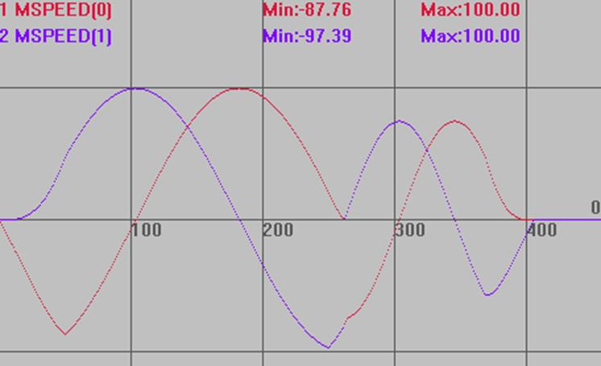

|
类型 |
轴参数 |
|
描述 |
小圆限速的最大圆弧半径，单位是units。 当半径大于FULL_SP_RADIUS时，速度是用户程序指定的速度值，当半径小于FULL_SP_RADIUS时，控制器会按比例减小速度。
VP_SPEED = FORCE_SPEED*radius/FULL_SP_RADIUS。 设置自动倒角时为倒角的参考半径。 |
|
语法 |
VAR1 = FULL_SP_RADIUS，FULL_SP_RADIUS = expression |
|
适用控制器 |
通用 |
|
例子 |
BASE(0,1) '选择轴0为主轴 DPOS=0,0 '坐标清0 UNITS=100,100 ATYPE=1,1 '轴类型设置 SPEED=100,100 '主轴速度100units/s ACCEL=1000,1000 '加速度1000units/s/s DECEL=1000,1000 '加速度1000units/s/s FORCE_SPEED=150 '自定义速度150units/s CORNER_MODE=8 '开启小圆限速 FULL_SP_RADIUS=8 '限速半径8 TRIGGER '自动触发示波器 MOVECIRC(10,10,0,10,1) '圆弧半径10，不限速，按speed=100运行 MOVECIRC(4,4,0,4,1) '圆弧半径4，限速，速度按4/8*150=75运行
速度曲线 MSPEED(0)垂直刻度100 MSPEED(1)垂直刻度100  |
|
相关指令 |